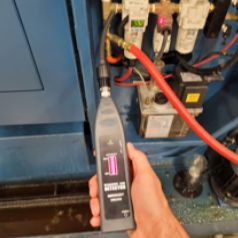
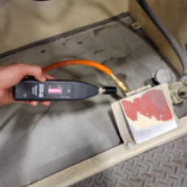
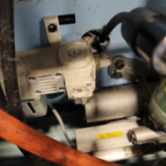
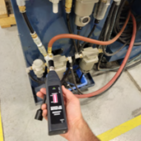
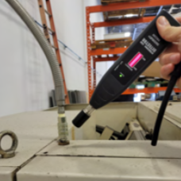
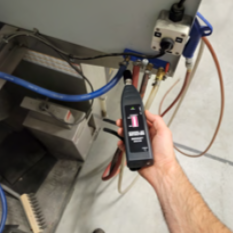
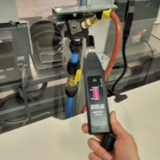
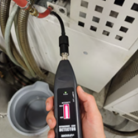

Major Results
Reducing the duty cycle of both the air compressor and the Wire EDM unit from 100% to 30% for the remainder of their lifespan offers substantial economic advantages. By modifying the duty cycle, we extend the useful life of these units, thereby optimizing the return on the initial investment.
Furthermore, this adjustment results in reduced annual maintenance
costs. Under the previous duty cycle, the maintenance cost would have
been around 1% of the initial equipment cost per year. By lowering the
duty cycle to 30%, the strain on the units significantly decreases,
thereby cutting down maintenance costs.
Specifically, for the air compressor, originally costing approximately $60,000, the initial annual maintenance cost would have been about $600. With a conservative 20% reduction due to the lower duty cycle, the annual maintenance cost is now approximately $480. This results in a yearly saving of $120. Over the remaining 10-year lifespan, these savings amount to $1,200. For the Wire EDM unit, initially priced at approximately $100,000, the original annual maintenance cost was approximately $1,000. With the same 20% reduction due to the decreased duty cycle, the annual maintenance cost drops to around $800, generating a yearly saving of $200. Over the remaining 10 years of the unit's lifespan, this saving adds up to $2,000.
In summary
Specifically, for the air compressor, originally costing approximately $60,000, the initial annual maintenance cost would have been about $600. With a conservative 20% reduction due to the lower duty cycle, the annual maintenance cost is now approximately $480. This results in a yearly saving of $120. Over the remaining 10-year lifespan, these savings amount to $1,200. For the Wire EDM unit, initially priced at approximately $100,000, the original annual maintenance cost was approximately $1,000. With the same 20% reduction due to the decreased duty cycle, the annual maintenance cost drops to around $800, generating a yearly saving of $200. Over the remaining 10 years of the unit's lifespan, this saving adds up to $2,000.
In summary
By extending the lifespan of the equipment and reducing maintenance
costs over the next decade, the estimated total savings come to
$3,200. This scenario highlights the considerable financial benefits
of real-time monitoring and proactive management of critical assets.
Additionally, we have not factored in the costs associated with production disruptions that could occur from unexpected equipment failure due to high usage. The potential savings from avoiding these disruptions further underline the value of our strategy.
Additionally, we have not factored in the costs associated with production disruptions that could occur from unexpected equipment failure due to high usage. The potential savings from avoiding these disruptions further underline the value of our strategy.
Ultrasonic Air Leak Detector

Below are the eight(8) leaks we found.








The ultrasonic leak detector helped us find the leaks in a noisy manufacturing shop environment. Once close, we could hear the leaks with our ears, and in some cases feel them with our hands. The leaks are severe enough that the air compressor is constantly running to compensate.